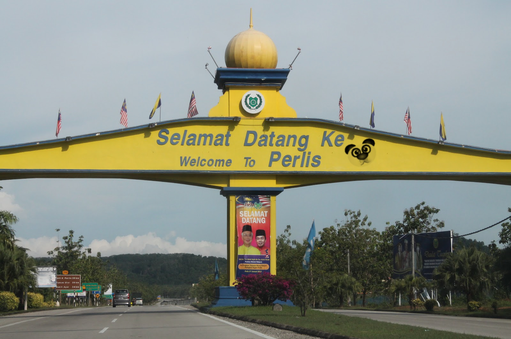

Our hometown cannot be forgotten by all of us because of where we were born or raised.When we were young, most of us dreamed of moving to a big city and working in a reputable company. But when we grow up and start generating income, we realize what our hometown means to us.
A hometown is not just a place or a country. It is a place where you can see yourself grow and keep all the unforgettable memories of your childhood.
Everyone has their own hometown, so do I. My hometown is Kampung Alor Redis in Perlis. For me my hometown is one of my favorite places because this is where I grew up for 21 years. My mother ran a small business in front of our house. My hometown also has a beautiful view of paddy fields and also a very clean road area and equipped with good and friendly villagers.